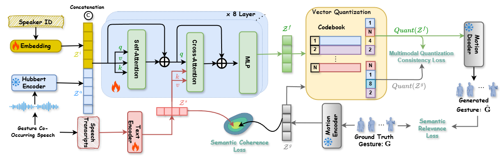

(Hint: The video plays smoothly in Opera and Chrome browsers.)
üî• Highlights
We introduce a novel framework, SemGes, that first learns a robust VQ-VAE motion prior for body and hand gestures, and then generates gestures driven by fused speech audio, text-based semantics, and speaker identity in a cross-modal transformer.
Our method jointly captures discourse-level context via a semantic coherence loss and fine-grained representational gestures (e.g., iconic, metaphoric) via a semantic relevance loss.
We propose an overlap-and-combine inference algorithm that maintains smooth continuity over extended durations.
Creating a virtual avatar with semantically coherent gestures that are aligned with speech is a challenging task. Existing gesture generation research mainly focused on generating rhythmic beat gestures, neglecting the semantic context of the gestures. In this paper, we propose a novel approach for semantic grounding in co-speech gesture generation that integrates semantic information at both fine-grained and global levels. Our approach starts with learning the motion prior through a vector-quantized variational autoencoder. Built on this model, a second-stage module is applied to automatically generate gestures from speech, text-based semantics and speaker identity that ensures consistency between the semantic relevance of generated gestures and co-occurring speech semantics through semantic coherence and relevance modules. Experimental results demonstrate that our approach enhances the realism and coherence of semantic gestures. Extensive experiments and user studies show that our method outperforms state-of-the-art approaches across two benchmarks in co-speech gesture generation in both objective and subjective metrics.
SemGes: Semantic-Aware Gesture Generation
üõ†Ô∏è SemGes Framework Overview

SemGes employs three training pathways:
(1) Global semantic coherence, which minimizes latent disparities between gesture and text encoders.
(2) Multimodal Quantization learning, where integrated multimodal representation codes are aligned with quantized motion to decode them into hand and body movements.
(3) Semantic relevance learning, which emphasizes semantic gestures.
üìä Main Results
Our model achieves state-of-the-art performance across multiple benchmarks with significant improvements in
BEAT and TED Expressive datasets .